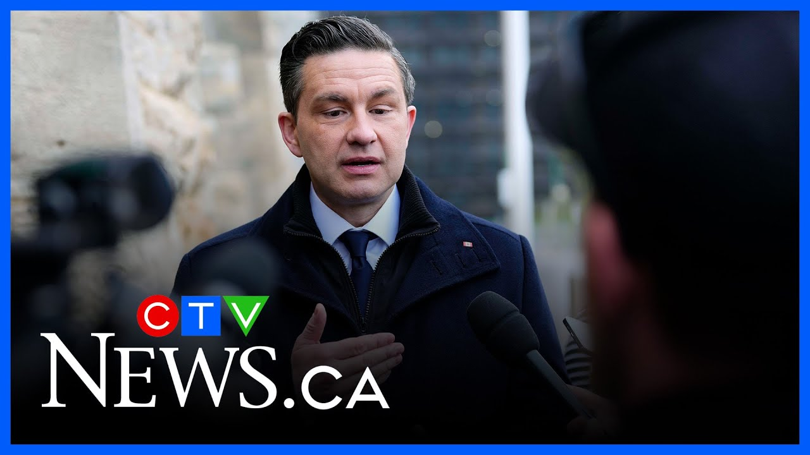

来B站一起耍【Global每日英语简报】
【波利耶夫可能要到秋天才能重返议会，因为他希望通过补选赢得席位】
Summary: CTV's Colton Prele provides insights on Pierre Poilievre's political future, including the timeline for his potential return to Parliament and challenges facing the Conservative Party.
摘要： CTV的科尔顿·普雷尔分析了皮埃尔·波利耶夫的政治前景，包括他重返议会的时间表以及保守党面临的挑战。

⏱️ Estimated Reading Time: 7 min
CTV's Colton Prele is joining us now from Parliament Hill with more.
CTV的科尔顿·普雷尔正在议会山为我们带来更多报道。
So I think Colton, good morning to you.
科尔顿，早上好。
A lot of people might be wondering um what does the future hold for Pierre Polyv?
许多人可能想知道皮埃尔·波利耶夫的未来会怎样。
He spoke for the first time.
他首次发表了讲话。
We played a bit of sound uh to reporters today, but what do the next days, weeks, and months look like for him?
我们今天向记者播放了一些录音，但他接下来的几天、几周和几个月会是什么样子？
Well, it's going to be a very busy time for him, especially because if he is going to stay on as leader and if he is going to return to parliament, he can't just jump right in.
对他来说这将是非常忙碌的时期，尤其是如果他打算继续担任领袖并重返议会，他不能直接介入。
In fact, the MP who has said he's going to resign, Damen Curic, an Alberta MP, also needs to wait.
事实上，表示将辞职的阿尔伯塔省议员达门·库里奇也需要等待。
He needs to wait at least 30 days before he can resign in a new parliament.
他需要至少等待30天才能在新议会中辞职。
And then once he resigns, there's about an 11-day waiting period before that seat is declared vacant.
一旦他辞职，大约需要11天的等待期才能宣布该席位空缺。
And then once that seat is declared vacant, then the prime minister can call a bi-election.
一旦该席位被宣布空缺，总理就可以宣布补选。
And as you do the math and as you count down the days in the calendar, it quickly becomes apparent that Pierre Polev won't be back in the House of Commons until at least the fall at the earliest.
通过计算日历上的天数，可以很快看出皮埃尔·波利耶夫最早也要到秋天才能重返众议院。
And that is an interesting challenge for him and for the party because as he tries to lead this party going forward and certainly seems like he is going to from the MPs that we've spoke to today, they are still backing him quite publicly and from the MPs that I've spoke to and and senior conservatives we've talked to in the week leading up to this.
这对他和政党来说是一个有趣的挑战，因为他试图领导政党前进，而且从我们今天交谈的议员来看，他们仍然公开支持他，从我和其他资深保守党人士在本周之前的谈话来看也是如此。
does still seem to have support in in large at the very least.
至少在很大程度上他似乎仍然得到支持。
He is going to be busy because there's going to be someone else in the House of Commons.
他会很忙，因为众议院将会有其他人。
They're going to need to elect an interim leader uh to be the leader of the opposition in the short term who asks questions to the prime minister and is the the the figurehead in the House of Commons Parliament.
他们需要选出一位临时领袖，在短期内担任反对党领袖，向总理提问并成为众议院的象征性人物。
And so for Pierre Polyv, this is as much about maintaining, growing, and and steering the boat from afar as it is getting ready for his own potential bi-election and a return to the House of Commons and and then determining what happens next for the party themselves.
因此，对皮埃尔·波利耶夫来说，这既是关于从远处维持、发展和掌舵，也是为他自己的潜在补选和重返众议院做准备，然后决定政党下一步的行动。
So what did he say when he spoke with reporters earlier today about what lessons he's learned since the loss?
那么他今天早些时候与记者交谈时，关于从失败中学到的教训，他说了什么？
That's the interesting part there.
这是有趣的部分。
There was twofold.
有两方面。
One, the clip you played about needing to find a million more votes.
一是你播放的关于需要再争取一百万张选票的片段。
the the challenge that exists in an electoral system dominated by two parties rather than three parties and four if you're in Quebec.
在由两党主导的选举制度中存在的挑战，而不是三党，在魁北克甚至是四党。
That's one interesting element of this.
这是其中一个有趣的元素。
But the other interesting element of this was the question around whether the message was right, whether they struck the right tone, got that message out to the right people.
但另一个有趣的元素是关于信息是否正确的问题，他们是否把握了正确的基调，是否将信息传达给了正确的人。
And Pier PV said he thought the message was right, but that they needed to get it to more people and perhaps expand it a little bit.
皮埃尔·波利耶夫表示他认为信息是正确的，但他们需要将其传达给更多人，或许还需要稍微扩展一下。
And one way to expand that would to be to have a larger team behind him.
扩展的一种方式是拥有更大的团队支持他。
And that's where you get into the intricacies of politics because there are plenty of questions around his own leadership.
这就是政治复杂性的地方，因为围绕他的领导能力有很多问题。
There are questions around the team around him.
围绕他的团队也有问题。
He's lost a number of key senior people in his team after this election, including the director of communications and the director of issues management, both of whom uh would be relatively close to Pier Piov and and dealing with that that internal circle.
在这次选举后，他失去了团队中的一些关键高级成员，包括通讯主管和问题管理主管，这两位都与皮埃尔·波利耶夫关系较为密切，并处理内部圈子的事务。
But there's also been so much chatter around his campaign manager, Jenny Burn, who was really kind of puppeteering this entire campaign.
但他的竞选经理珍妮·伯恩也引发了大量议论，她实际上是整个竞选活动的幕后操纵者。
She was essentially ousted from the conservatives in 2015 after the Harper loss, after failing to win in that campaign, brought back under Pierre Pulv.
她在2015年哈珀失败后，因未能赢得竞选而被保守党排除，后来又被皮埃尔·波利耶夫召回。
And there are a lot of questions as to whether or not she is the right person to lead this party from, you know, the back behind the scenes moving forward from behind the curtain.
关于她是否是领导该党的合适人选，有很多疑问，你知道，从幕后推动前进。
and the MPs that we've spoke to today have all pointed to that being Pierre Polev's decision.
我们今天交谈的议员都指出这是皮埃尔·波利耶夫的决定。
We haven't heard very public comments on whether or not she should still be the person leading this party forward.
我们还没有听到关于她是否应该继续领导该党的公开评论。
Pierre Polev did say he was proud of the work they did together, but that's neither an endorsement nor a condemnation of whether or not he believes he wants to continue with her.
皮埃尔·波利耶夫确实表示他为他们的合作感到自豪，但这既不是支持也不是谴责他是否希望继续与她合作。
And so that's also one of those areas that he needs to make a decision on moving forward.
因此，这也是他需要做出决定的领域之一。
If you are going to change the message, if you are going to change perhaps what the future of this conservative party looks like, do you need to change the people around you helping you make those decisions?
如果你要改变信息，如果你要改变保守党的未来面貌，你是否需要改变帮助你做出这些决策的身边的人？
All right, Colton Pra in Ottawa for us this morning.
好的，今早来自渥太华的科尔顿·普雷尔。
We'll stay in close contact with you, Colton.
我们会与你保持密切联系，科尔顿。
Appreciate that.
感谢。